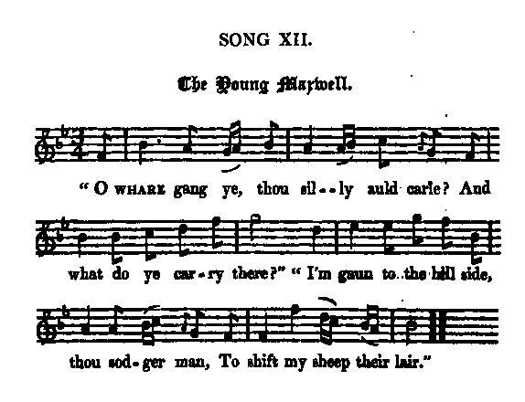

The Young Maxwell
Le Jeune Maxwell
From Cromek's "Remains of Nithsdale and Galloway song", page 185, 1810
Tune - Mélodie"The Young Maxwell"
from Hogg's "Jacobite Relics" 2nd Series N°12 page 37
Sequenced by Christian Souchon

|
To the tune:
James Hogg's gives no comment to this tune. Maybe his own composition... There is a striking similarity between this text and "Waes of Scotland" , admittedly composed by Allan Cunningham, to whom we are perhaps endebted for this song as well. That's anyway what Hogg suggests in his enigmatic comment to the next song . |
A propos de la mélodie:
Hogg ne fait pas de commentaire sur ce chant. Peut-être est-ce lui qui l'a composé... Il y a une ressemblance frappante entre ce texte et "Les malheurs de l'Ecosse" , qu'on attribue généralement à Allan Cunningham. Peut-être lui doit-on aussi le présent poème. C'est en tout cas ce que suggère Hogg dans son enigmatique commentaire du chant suivant . |

|
THE YOUNG MAXWELL.
1. "O whare gang ye, thou silly auld carle? And what do ye carry there?" "I'm gaun to the hillside, thou sodger man, To shift my sheep their lair." 2. Ae stride or twa took the silly auld carle, And a gude lang stride took he: " I trow thou be a feck auld carle; " Will ye shaw the way to me ?" 3. And he has gane wi' the silly auld carle Adown by the greenwood side; " Light down and gang, thou sodger man, " For here ye canna ride." 4. He drew the reins o' his bonny gray steed, And lightly down he sprang: Of the comeliest scarlet was his weir-coat, Whare the gowden tassels hang. 5. He has thrawn aff his plaid, the silly auld carle, And his bonnet frae 'boon his bree, And wha was it but the young Maxwell! And his gude brown sword drew he. 6. " Thou kill'd my father, thou vile Southron, " And thou kill'd my brethren three, " Whilk brak the heart o' my ae sister, " I lov'd as the light o' my e'e. 7. " Draw out your sword, thou vile Southron, " Red wat wi' blude o' my kin; " That sword it crappit the bonniest flower " E'er lifted its head to the sun. 8. " There's ae sad stroke for my dear auld father, " There's twa for my brethren three, " And there's ane to thy heart for my ae sister, " Wham I lov'd as the light o' my e'e." Source: "The Jacobite Relics of Scotland, being the Songs, Airs and Legends of the Adherents to the House of Stuart" collected by James Hogg, published in Edinburgh by William Blackwood in 1821. |
LE JEUNE MAXWELL
1. "D'où sors-tu donc, dis-moi, bonhomme Et que faisais-tu donc, là-haut?" "Soldat, je reviens de l'alpage Où j'ai déplacé mon troupeau." 2. Le vieil homme poursuit sa marche, L'autre voit comme il va bon train, "Toujours bon pied, bon oeil, il semble. Ca, montre-moi donc le chemin!" 3. Il suit à cheval le vieil homme. Puis on atteignit la forêt. "Pied à terre, soldat! Marche comme Moi. Tu ne peux plus chevaucher. 4. Du coursier gris tirant les rênes Il pose le pied sur le sol Sa belle tunique écarlate Est ornée de passements d'or. 5. Le vieil homme ôte sa coiffure, Se débarrasse de son plaid. Mais cette épée, mais cette allure, Jeune Maxwell, je les connais! 6. "Chien d'Anglais, tu tuas mon père Tu tuas mes trois frères aussi. Et ma soeur qui m'était si chère, Tant de chagrin! elle a péri. 7. Vil Anglais, sors-la cette épée! Toute rougie du sang des miens Les belles fleurs qu'elle a fauchées Avaient jalonné mon chemin. 8. "Tiens, prends ce coup: c'est pour mon père! Et pour mes frères, celui-là! Et pour venger ma soeur si chère Je te porte au coeur ce coup droit! (Trad. Christian Souchon (c) 2010) |
|
The following comments are copied by Hogg from Cromek's "Remains of Nithsdale and Galloway song", pages 184 and 187, 1810:
"This ballad is founded on fact. A young gentleman of the family of Maxwell, being an adherent of the Stuarts at an earlier period than that we are treating of (1715), suffered in the general calamity of his friends. After seeing his paternal house reduced to ashes, his father killed in its defence, his only sister dying with grief for her father, and three brothers slain, he assumed the habit of an old shepherd, and, in one of his excursions, singled out one of the individual men who had ruined his family. After upbraiding him for his cruelty, he slew him in single combat. The editor has taken some pains to ascertain the field of this adventure; but without success. It has been, in all likelihood, on the skirts of Nithsdale or Galloway. These notices being known only to a few of the Stuarts's adherents, have all perished along with the fall of their cause." "The admirers of Scottish rustic poetry, of which this song is a beautiful specimen, are indebted to the enthusiasm and fine taste of Mrs Copland for the recovery of these verses. There is a variation in the third stanza, which would have been adopted, had it not been an interpolation. It expressly points to the scene of encounter: " And gane he has wi' the sleeky auld carle, Around the hill sae steep; Until they came to the auld castle, Which hings owre Dee sae deep." The note is prolonged by an anecdote that took place in the Rebellion of 1745 featuring a Nithsdale lad, Herson, who punished, in after years, a dragoon of Cumberland's army in a similar way. |
Les commentaires qui suivent sont repris par Hogg de l'ouvrage de Cromek, "Remains of Nithsdale and Galloway song", pages 184 and 187, 1810:
"Cette ballade est fondée sur des faits avérés. Un jeune homme de la famille Maxwell, partisan des Stuarts à une époque antérieure à celle dont nous traitons (1715), subit le même sort lamentable que ses amis. Après avoir vu la maison paternelle réduite en cendre, son père tué en voulant la défendre, sa soeur mourir de chagrin pour son père et ses trois frères assassinés, il prit les vêtements d'un vieux berger, et lors d'une de ses randonnées, il reconnut l'un des individus qui avaient massacré sa famille. Après lui avoir reproché sa cruauté, il le tua en combat singulier. L'éditeur s'est donné bien du mal pour identifier l'endroit où ces événements se déroulèrent; ce fut en pure perte. Il s'agissait sans doute des bords du Nithsdale ou du Galloway. Ces détails n'étant connus que des seuls partisans des Stuarts, furent perdus en même temps que leur cause. Les amateurs de poésie rustique écossaise dont on a ici un beau spécimen, doivent à l'enthousiasme de Mrs Copland la sauvegarde de ces couplets. Il existe une variante de la troisième strophe, qui aurait été imprimée si je ne la croyais pas apocryphe. Elle désigne précisément le lieu de cette rencontre: " Guidé par ce vieillard aimable La falaise il a contourné Pour atteindre la forteresse Qu'on voit en surplomb de la Dee." La note se prolonge par une anecdote relatant des faits datant de la rébellion de 1745, où un jeune homme de Nithsdale, Herson, tire vengeance, des années après, d'un dragon de Cumberland dans des circonstances similaires. |
|
|
|